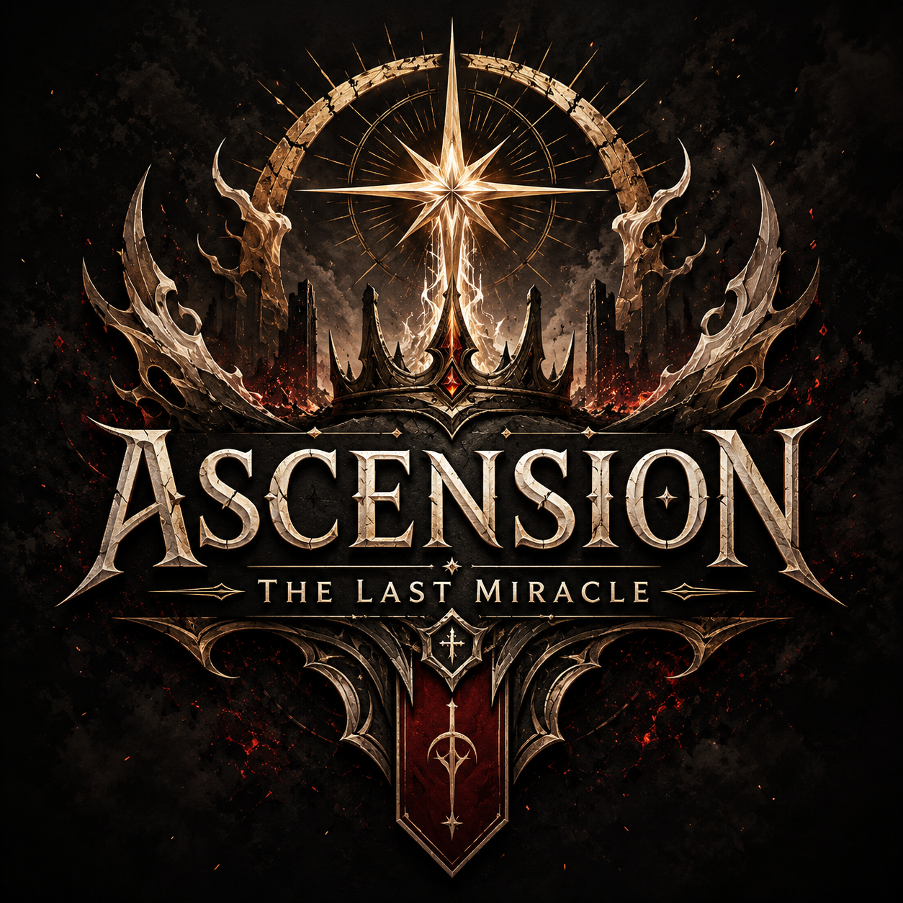
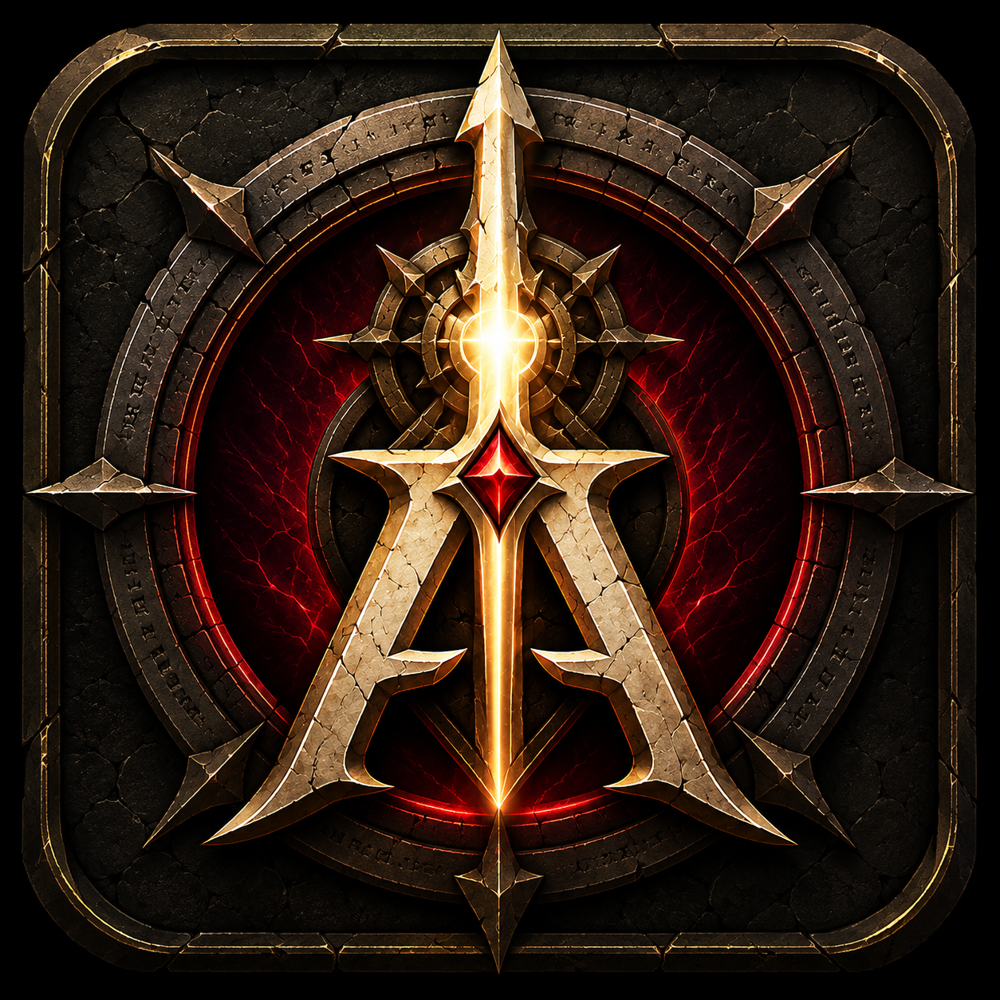

I
Les survivants
Survivre au réveil du Voile


Le guide complet de la version finale
ASCENSION est une campagne dark fantasy en monde ouvert mêlant exploration, combat exigeant, progression coopérative et récit à choix. Le wiki documente désormais les 10 chapitres, les 72 quêtes, les 4 archétypes, les Six Épreuves et le combat contre Vaelorn.

Stable en solo et en multijoueur. Aucun nouveau monde requis depuis la RC4.
Les dix chapitres
Survivre au réveil du Voile
Cartographier le monde brisé
Devenir chasseurs
Franchir les verrous
Choisir une voie
Lire les présages
Automatiser les preuves
Comprendre la guerre oubliée
Porter les six responsabilités
Terminer la campagne
Diagnostic de progression, récupération d’objets narratifs, preuves et aide intégrée.
Voir toutes les commandes →C pour Epic Fight, J pour les talents, M pour la carte et V pour le chat vocal.
Voir la carte complète →Consulte les limites connues, les procédures de récupération et le dépannage serveur.
Ouvrir l’aide →